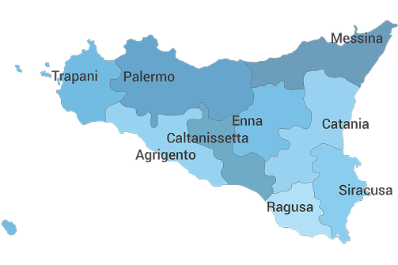
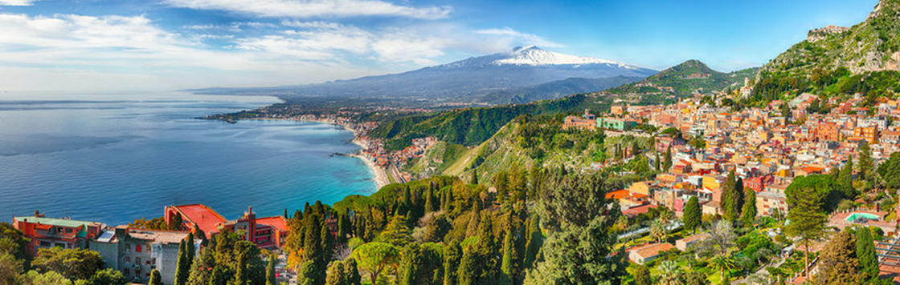
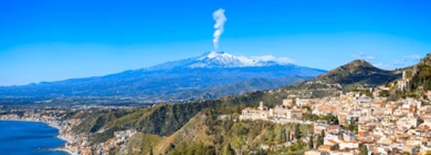

La Sicilia, la più grande isola del Mediterraneo, è suddivisa in nove province, ognuna con un territorio, un patrimonio culturale e un paesaggio caratteristico. Queste province riflettono la ricca storia, la straordinaria diversità geografica e l’identità unica dell’isola, costruita nel corso dei secoli dall’incontro di popoli, culture e tradizioni differenti. Dalle città d’arte ai piccoli borghi, ogni provincia custodisce testimonianze storiche, monumenti e tradizioni che raccontano il passato e il presente della regione.
Queste province sono il riflesso delle molteplici anime della Sicilia: dall’entroterra collinare alle spiagge marine, dai paesaggi vulcanici alle antiche testimonianze archeologiche, ciascuna offre un’esperienza unica e irripetibile con scenari naturali e suggestivi, offrendo in oltre patrimoni artistici di grande valore


- Provincia di Agrigento:
Situata nella parte sud-occidentale dell’isola, è famosa per la Valle dei Templi e per le spiagge del suo litorale.
- Provincia di Caltanissetta:
Nel cuore della Sicilia, con paesaggi collinari e una storia legata all’agricoltura e alle tradizioni interne.
- Provincia di Catania:
A est, dominata dal Monte Etna, il più grande vulcano attivo d’Europa, con una costa frastagliata e città vivaci.
- Provincia di Enna:
L’unica provincia senza sbocco sul mare, conosciuta per i panorami collinari e centri storici.
- Provincia di Messina:
Al nord-est dell’isola, affacciata sullo stretto omonimo e ricca di borghi e coste scenografiche.
- Provincia di Palermo:
Capoluogo regionale e centrale per storia, cultura mercati, monumenti e una vibrante vita urbana.
- Provincia di Ragusa:
Nel sud-est, celebre per il barocco di Ragusa Ibla e per le località costiere mediterranee.
- Provincia di Siracusa:
Con un ricco patrimonio greco e romano, spiagge e il suggestivo centro storico di Ortigia.
- Provincia di Trapani:
All’estremità occidentale dell’isola, con saline, isole Egadi e borghi storici.
